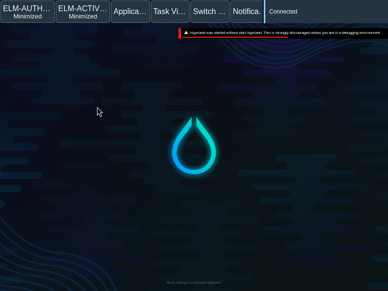
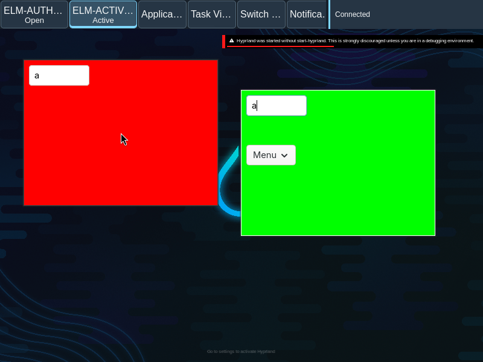
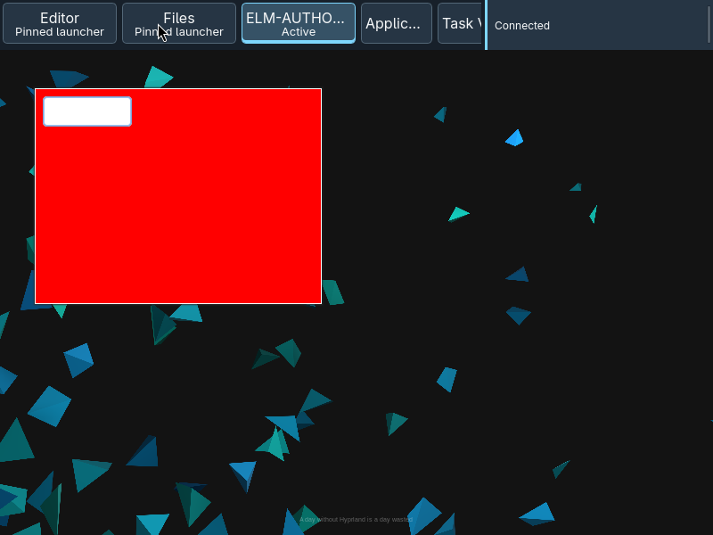
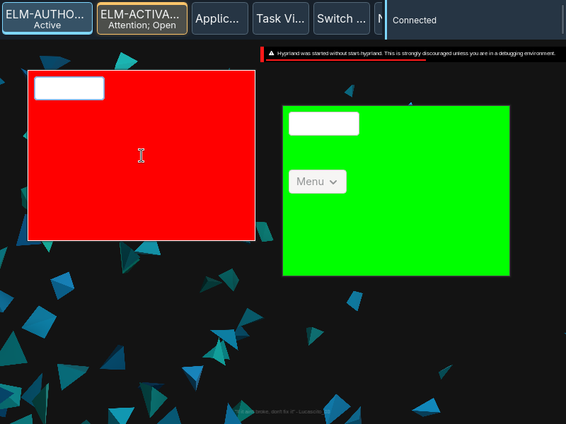

Application groups
Application groups collect the windows and launcher belonging to an application.
Overview
Application groups collect the windows and launcher belonging to an application.
Anatomy
A group has a primary control, a name and detail for its observed families and attention. Pins retain an application entry without a window.
The primary button combines the application label and state detail. A pinned entry occupies the application sequence even when no family is open; an ambiguous or unavailable application identity does not become an actionable launch target.
States
Single, multiple, minimized and zero-window groups have distinct actions. Attention is separate from activity and focus.
- One inactive family: activate it.
- One active family: minimize it to the desktop.
- One minimized family: restore it.
- Multiple families: open the window picker.
- Pin with no family: launch the available application.
Specimen
Real Elm interface. Simulated desktop. Client window interiors are fixtures. Load the desktop only when you want to explore this component.
Open the full desktop scenario
Related archived specimens: Frozen v6 window-group. Frozen v6 is an archival reference.
Behavior
One family activates, minimizes when active, or restores when minimized. Multiple families open the picker. A zero-window pin invokes its available launcher.
The primary action follows the observed family count and state. Context actions are separate from that primary action; opening a picker does not itself activate a family.
Accessibility
The group name and detail communicate state without relying on color; keyboard focus stays visible.
Content
Use application names and observed counts; do not describe a submitted launch as an opened window.
Preserve the application name, family count and attention detail. A pin describes an available launcher, not proof that a process is running.
Evidence
Unmodified captures of the running interface record the states below.




Try it
Explore application groups in context on the simulated desktop.